🎯 Bu Haftanın Kazanımları
- EDA (keşifsel veri analizi) checklist'ini uygulayabilir: şekil, eksik değer, aykırı değer, dağılım
-
describe(),info(),groupby()ile veri setine ilk bakışı yapabilir - Her grafik türünün güçlü ve zayıf yönlerini; yanlış kullanımda yanıltıcı olabileceği durumları açıklayabilir
- KDE (Kernel Density Estimation) ile histogram farkını anlayabilir
- Matplotlib, Seaborn ve Plotly'nin rol farkını ve temel kullanım kalıplarını bilir
- Regresyon ve sınıflandırma metriklerinin formülünü ve ne ölçtüklerini açıklayabilir (MAE, R², precision, recall, F1)
- Regresyon ve sınıflandırmanın ne olduğunu, kodda hangi parçanın ne işe yaradığını açıklayabilir
- scikit-learn ile regresyon, sınıflandırma, kümeleme ve ağaç tabanlı modellere giriş yapabilir
- "Spark hazırlar → Pandas/sklearn analiz eder" desenini küçük bir örnekle uygulayabilir
🗺️ Hikaye Haritası — Veriden İçgörüye
Önceki bölümlerde veriyi topladık (ETL), ölçekledik (Spark), hızlandık (Kafka) ve koruduk (KVKK, anonimleştirme). Bu bölümde cevapladığımız soru: "Peki bu veri bize ne anlatıyor?"
(Bölüm 2–3'ten)"] --> A1["EDA — veriye ilk bakış
(Bölüm 1)"] A1 --> P2["Hangi soruyu soruyoruz?"] P2 --> A2["Grafik seç
(Bölüm 2–5)"] A2 --> P3["Tahmin mi, açıklama mı?"] P3 --> A3["scikit-learn model
(Bölüm 6)"] A3 --> P4["Sonuç güvenilir mi?"] P4 --> A4["Metrik + grafik + rapor
(Bölüm 7)"]
Bölüm 5'te Bölüm 3–4 konularını kodla pekiştirdiniz. Burada analitik katmana geçiyoruz: Bölüm 2'deki Pandas, Bölüm 3'teki temiz veri ve Bölüm 4'teki güvenlik farkındalığı üzerine EDA + grafik + basit model kuruyoruz.
🧭 Sıfırdan Başlayanlar İçin — Bu Bölümün Mantığı
Bu bölümde istatistik, matematik veya makine öğrenmesi bilmeniz beklenmiyor. Bölüm 2'de Pandas ile tablo okumayı, Bölüm 5'te kod yazmayı gördünüz — burada o tabloların ne anlama geldiğini ve nasıl görselleştirileceğini öğreneceğiz. İngilizce terimler geçecek; her birini Türkçe ve günlük örnekle açıklıyoruz.
Veri analizi üç katmandan oluşur:
- EDA (Keşif): Veriye soru sormadan önce "elimizde ne var?" diye bakmak — tıpkı yemek yapmadan önce dolaptaki malzemeleri kontrol etmek gibi.
- Görselleştirme: Sayıları grafikle göstermek — insan gözü 200 satırlık tabloda örüntüyü kaçırır, grafikte görür.
- Makine öğrenmesi (isteğe bağlı): Geçmiş veriden geleceği tahmin etmeye çalışan basit formüller — "bu müşteri ayrılır mı?", "gelecek ay satış kaç TL?"
📐 Veri Tipleri ve Sık Geçen Kelimeler
Tablodaki her kolon farklı türde bilgi taşır. Grafik ve model seçimi kolonun türüne bağlıdır — yanlış türde yanlış araca giderseniz sonuç anlamsız olur.
Arada sınırsız ara değer olabilir. Örnek: aylık harcama 247,50 TL, yaş 34, sıcaklık 22,3°C.
Grafik: histogram, scatter, boxplot, line (zaman ise).
ML: regresyon hedefi olabilir ("harcama ne kadar olur?").
Sabit etiketlerden biri. Örnek: şehir = Ankara, kanal = Web, cinsiyet = K.
Grafik: bar chart, countplot, pasta (az kategori).
ML: sınıflandırma hedefi veya gruplama için kullanılır.
Sadece iki değer. Örnek: churn = 0 (kaldı) veya 1 (ayrıldı), spam = evet/hayır.
Özel bir kategorik tür; sınıflandırmanın en yaygın hali.
2025-05-19 10:30 gibi. Analizde genelde türetim yapılır: yıl, ay, hafta, gün adı.
Grafik: line chart (zaman ekseninde trend).
📖 Kelime haznesi — günlük dille
| Terim | Günlük dille ne demek? |
|---|---|
| Dağılımdistribution | Verinin "nasıl yayıldığı". Örnek: "Yaşlar 20–60 arasına mı toplanmış, yoksa çoğu 30 civarında mı?" — histogram veya KDE ile görülür. |
| Ortalamamean | Tüm değerleri topla, kişi sayısına böl. Aykırı değere çok duyarlı: 9 kişi 30.000 TL maaş, 1 kişi 1.000.000 TL → ortalama ~127.000 TL; "tipik maaş" gibi görünür ama yanıltıcıdır. |
| Medyanmedian | Değerleri küçükten büyüğe dizince ortadaki sayı. Aykırı değerlerden etkilenmez. Maaş örneğinde medyan ~30.000 TL — çoğunluğu daha iyi temsil eder. |
| Çeyrek Q1, Q3quartile | Veriyi dört eş parçaya bölen sınırlar. Q1 = alt %25, Q3 = üst %25. Boxplot'ta kutu Q1–Q3 arası; ortadaki çizgi medyandır. |
| Aykırı değeroutlier | Diğerlerinden çok uzak tek kayıt. Örnek: ortalama sepet 150 TL iken bir sipariş 99.999 TL. Ortalamayı ve bazı modelleri bozar — EDA'da mutlaka kontrol edilir. |
| Eksik değermissing / NaN | Boş hücre. Excel'de boş; Pandas'ta NaN. "Bilinmiyor" — silmek, doldurmak veya modelle tahmin etmek gerekir. |
| Frekansfrequency | Bir değerin veya aralığın kaç kez geçtiği. Histogram'da sütun yüksekliği = frekans (adet). |
| Korelasyoncorrelation | İki sayısal kolonun birlikte mi hareket ettiği. Biri artarken diğeri de artıyorsa pozitif; azalıyorsa negatif. Nedensellik değildir — sadece birlikte hareket. |
| Histogram | Sayısal değerleri kutulara böler; her kutunun yüksekliği o aralıktaki kayıt sayısıdır (frekans). |
| KDEkernel density estimation | Histogramın pürüzsüz eğri versiyonu. Her noktanın etrafına küçük tepe koyup toplarsınız. Y ekseni yoğunluk (frekans değil). Az veride abartılı olabilir. |
| Özellik / girdifeature | Modelin baktığı kolonlar: yaş, harcama, destek çağrısı → tahmin için ipuçları. |
| Hedef / etikettarget / label | Tahmin etmek istediğin kolon: churn (0/1) veya gelecek ay satış (TL). |
| Eğitim ve testtrain / test | Veriyi ikiye böl: model bir kısmıyla öğrenir (train), görmediği kısımda sınava girer (test). |
| Ezberlemeoverfitting | Model eğitim verisini ezberler, yeni veride başarısız olur. Sınav sorularını ezberleyip farklı soruda kalakalmak gibi. |
👁️ Görselleştirme Nedir? Neden Grafik?
200 müşterinin yaş ve harcamasını tabloda görmek zordur. Aynı veriyi scatter grafiğine koyunca: "gençler mi daha çok harcıyor?", "sağ üstte tek başına duran nokta var mı (aykırı)?" gibi sorular saniyeler içinde cevaplanır.
200 satır × 5 kolon = 1000 hücre. İnsan gözü örüntü bulamaz. Raporlarda "ham veri" olarak nadiren konur.
Örüntü, trend, aykırı değer, grup farkı görsel olarak öne çıkar. Sunum ve karar için kullanılır — ama doğru grafik türü seçilmeli.
Bu bölümde üç kütüphane kullanacağız:
- Matplotlib — tuval ve fırça; en temel, en esnek.
- Seaborn — Matplotlib üzerine istatistik grafikleri; daha az kod, daha şık varsayılan.
- Plotly — fare ile zoom/hover; sunum ve keşif için interaktif.
🔍 Bölüm 1: EDA — Veriye İlk Bakış
EDA (Exploratory Data Analysis — Keşifsel Veri Analizi), modele veya karmaşık grafiğe geçmeden önce veriyi tanımaktır. Amacı: sürprizleri erken yakalamak — boş hücreler, yanlış yazılmış 99.999 TL, hiç gelmeyen bir kategori…
Market alışverişine çıkmadan önce dolaba bakmak EDA'dır. "Yumurta var mı, süt bitmiş mi, bozuk bir domates var mı?" — yemek tarifine (modele) geçmeden önce malzemeyi kontrol edersiniz.
Checklist — her adım ne demek?
Kaç satır, kaç kolon? df.shape → (200, 5) = 200 müşteri, 5 bilgi alanı.
Az satır (<100) istatistiksel sonuçları zayıflatır; çok kolon (>50) karmaşıklığı artırır.
Her kolon sayı mı, metin mi, tarih mi? df.dtypes ve df.info().
Hata kaynağı: fiyat kolonu metin ("120,50") olarak gelmişse toplama/ortalama çalışmaz — önce sayıya çevirmek gerekir.
df.isna().sum() — hangi kolonda kaç boş hücre?
%5 eksik: doldurulabilir. %40 eksik: o kolonu düşünmek veya kaynağı sorgulamak gerekebilir.
df.describe() — min, max, ortalama, medyan (50%), çeyrekler.
Min=0, max=999999 ise aykırı veya hata şüphesi. Ortalama >> medyan ise birkaç çok büyük değer ortalamayı şişiriyor demektir.
"Ankara'daki müşteriler İstanbul'dakinden daha mı çok harcıyor?" → groupby("sehir")["harcama"].mean()
Kategorik kolona göre sayısal kolonu özetler.
df.nlargest(5, "harcama") veya boxplot ile uç noktalar.
99.999 TL tek sipariş: veri hatası mı, VIP müşteri mi? Karar verip silmek, kırpmak veya olduğu gibi bırakmak gerekir — gerekçeyi yazın.
🐍 Mini Uygulama: EDA checklist
Aşağıdaki örnek veri seti, abonelik uygulamasından gelen müşteri kayıtlarını simüle eder (Bölüm 4'teki churn senaryosuyla aynı dünya).
import pandas as pd
import numpy as np
np.random.seed(42)
df = pd.DataFrame({
"yas": np.random.randint(18, 65, 200),
"aylik_harcama": np.round(np.random.uniform(50, 500, 200), 2),
"sehir": np.random.choice(["Ankara", "İstanbul", "İzmir", "Bursa"], 200),
"destek_cagri": np.random.poisson(1.2, 200),
"churn": np.random.choice([0, 1], 200, p=[0.72, 0.28]),
})
# Bilerek birkaç eksik ve aykırı ekleyelim (gerçek veri gibi)
df.loc[3:5, "aylik_harcama"] = np.nan
df.loc[10, "aylik_harcama"] = 9999.0
# 1) Şekil
print("Satır × kolon:", df.shape)
print("Kolonlar:", list(df.columns))
# 2) Tipler
print(df.dtypes)
print(df.info())
# 3) Eksik değer
print("\nEksik sayısı:\n", df.isna().sum())
# 4) Sayısal özet
print("\n", df.describe())
# 5) Grup bazlı özet — hangi şehirde ortalama harcama daha yüksek?
print("\nŞehir bazında ortalama harcama:")
print(df.groupby("sehir")["aylik_harcama"].mean().sort_values(ascending=False))
# 6) Aykırı değer ipucu — 9999 TL tek satırda mı?
print("\nEn yüksek 5 harcama:\n", df.nlargest(5, "aylik_harcama")[["sehir", "aylik_harcama"]])Üç yaygın yol:
- Satırı sil — eksik az ise ve rastgele dağılmışsa.
- Ortalama / medyan ile doldur — sayısal kolonlarda; medyan aykırı değerden daha güvenli.
- Model içinde doldur — sklearn
SimpleImputer; pipeline'ın parçası olur.
Hangisini seçtiğinizi kısa gerekçeyle not edin: "Harcama eksikleri medyan ile dolduruldu çünkü aykırı değer ortalamayı bozardı."
📊 Bölüm 2: Hangi Grafik Hangi Soruya Cevap Verir?
Doğru grafik seçmek, doğru algoritma seçmek kadar önemli. Her grafik türü her zaman uygun değildir — yanlış grafik ya hiçbir şey göstermez ya da yanlış sonuç çıkarırsınız. Önce soruyu netleştirin, sonra grafiği seçin.
Grafik bir iddia taşır. "Bu dağılım normal mi?", "Bu iki değişken birlikte mi artıyor?", "Bu gruplar farklı mı?" — soruyu cümle olarak yazın; tablo satırına bakın.
📋 Grafik türleri karşılaştırması
| Grafik | Hangi soruya cevap? | Ne zaman iyi? | Ne zaman kötü / dikkat |
|---|---|---|---|
| Histogram | Tek sayısal kolonun dağılımı nasıl? | Yaş, fiyat, süre gibi sürekli değişkenler; aykırı değer ve çarpıklık görmek | Kategori saymak için kullanma (bar kullan). bins sayısı grafiği yanıltır — çok az = detay kaybı, çok fazla = gürültü |
| KDE (yoğunluk eğrisi) | Dağılımın "şekli" nedir? Gruplar üst üste mi? | İki+ grubun dağılımını aynı eksende kıyaslamak; histograma göre daha akıcı görünüm | Az veride (< ~30 nokta) abartılı eğriler üretir. Kesikli/aralıklı veride yanıltıcı olabilir |
| Bar / Countplot | Hangi kategori kaç kez geçiyor? | Şehir, ürün tipi, HTTP status gibi sayılabilir kategoriler | Çok kategori (50+) okunmaz — filtrele veya sırala. Sayısal sürekli değişken için bar kullanma |
| Scatter (nokta) | İki sayısal değişken birlikte mi hareket ediyor? | İlişki, küme, aykırı nokta aramak; 3. boyutu renkle/boyutla kodlamak | 10.000+ noktada "mürekkep lekesi" — alpha düşür, hexbin veya örnekle. Zaman serisinde line tercih et |
| Line (çizgi) | Zaman içinde trend var mı? | Günlük satış, sıcaklık, trafik — x ekseni zaman olduğunda | Kategoriler arası kıyas için line kullanma (bar/boxplot). Eksik tarihlerde çizgi yanıltır — önce doldur |
| Boxplot | Gruplar arasında dağılım farkı var mı? Aykırı var mı? | Churn vs harcama, şehir vs maaş — medyan ve çeyrekler net görünür | Dağılım şeklini (çok modlu) iyi göstermez — violin veya histogram ekle. Az gözlem (<5) anlamsız |
| Violin | Boxplot + dağılım şekli bir arada | Grup dağılımları simetrik değilse, çift tepeli ise | Az veride KDE gürültüsü yapar. Okuması boxplot'tan zor |
| Heatmap | Kolonlar birbiriyle ne kadar korele? | Çok sayısal kolonlu EDA; korelasyon matrisi | Korelasyon ≠ nedensellik. Kategorik veride anlamsız. Çok büyük matrisler okunmaz |
| Pie / pasta | Parçalar bütünün yüzde kaçı? | 2–4 dilim, sunum slaytı, basit paylaşım hikâyesi | 5+ dilim okunmaz — bar chart genelde daha iyi. Küçük farkları abartır |
| Plotly (interaktif) | Detay incelemek, filtrelemek, sunmak | Dashboard, rapor sunumu, hover ile nokta detayı | Statik PDF/Word raporunda işe yaramaz — PNG export veya Matplotlib kullan |
🔬 Histogram vs KDE — fark ne?
Veriyi sabit genişlikte kutulara böler; her kutunun yüksekliği = o aralıktaki kayıt sayısı. Basit, yorumlaması kolay. Kutu sayısı (bins) sizin kararınız — az kutu = detay kaybı, çok kutu = tırtıklı gürültü.
Her veri noktasının etrafına küçük bir "tepe" (Gauss çan eğrisi) koyar; tepeleri toplayınca pürüzsüz bir eğri çıkar. "Hangi yaşlar daha yoğun?" sorusuna histogram gibi cevap verir. İki grubu aynı grafikte kıyaslamak (churn vs kalan) için histogramdan okunaklı olabilir.
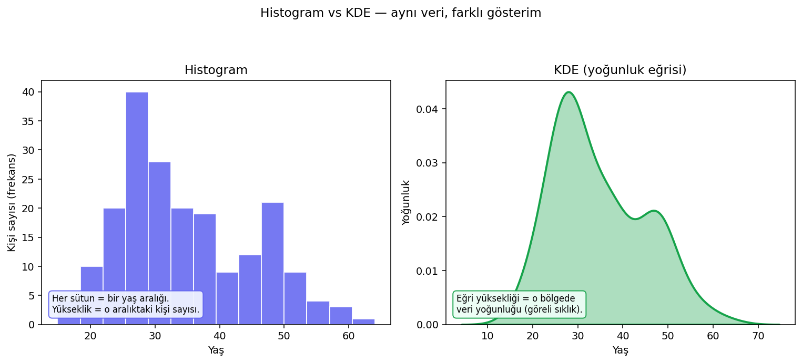
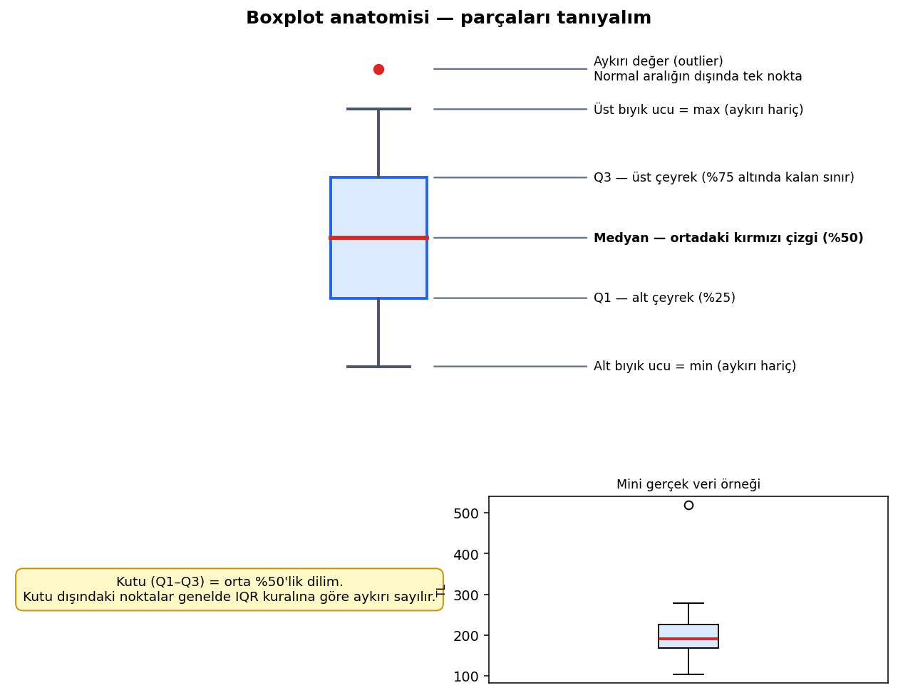
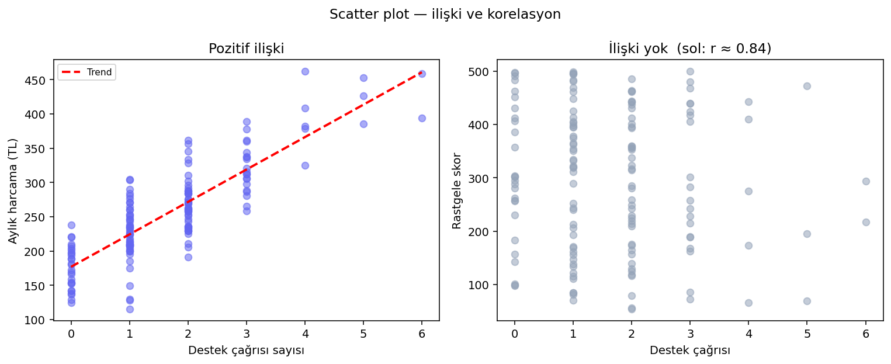
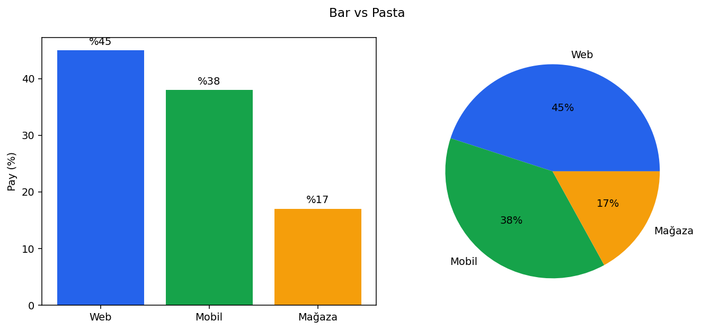
- Tek kolon, hızlı bakış → histogram
- İki grubu kıyasla (ör. churn vs kalan harcama) → KDE veya üst üste histogram
- Az veri (< 50 satır) → histogram; KDE abartabilir
- Kategori say → bar/countplot — asla histogram değil
🖼️ Bölüm 2b: Grafik Türleri Galerisi — Tek Script, On Altı Grafik
Aşağıdaki script iki PNG üretir: 12 grafik (4×3 ızgara) + 4 ek grafik (area, hexbin, yatay bar, histogram+KDE). Colab'da çalıştırmak için kodu kopyalayın veya repodaki script'i doğrudan çalıştırın:
python docs/ders-notlari/scripts/generate_grafik_galeri.py
# Tam kod: scripts/generate_grafik_galeri.py
# Özet — 4×3 galeri (1–12):
fig, axes = plt.subplots(4, 3, figsize=(16, 18))
# 1 histogram 2 bar 3 scatter
# 4 line 5 boxplot 6 heatmap
# 7 countplot 8 kde 9 violin
# 10 pasta 11 yığılmış bar 12 stripplot
plt.savefig("grafik_galeri.png")
# Ek galeri (13–16):
fig, axes = plt.subplots(2, 2, figsize=(12, 9))
# 13 area (zaman) 14 hexbin (çok nokta)
# 15 yatay bar 16 histogram + KDE birlikte
plt.savefig("grafik_galeri_ek.png")Tam, çalıştırılabilir kod için dosyayı açın — her grafik satır satır yorumlu:
# Colab: !git clone ... veya dosyayı yükleyin, sonra:
# %run generate_grafik_galeri.py
# veya aşağıdaki fonksiyonları hücre hücre çalıştırın
import pandas as pd
import numpy as np
import matplotlib.pyplot as plt
import seaborn as sns
np.random.seed(42)
df = pd.DataFrame({
"tarih": pd.date_range("2025-01-01", periods=120, freq="D"),
"satis": np.random.randint(80, 220, 120) + np.sin(np.linspace(0, 6, 120)) * 30,
"sehir": np.random.choice(["Ankara", "İstanbul", "İzmir"], 120),
"kanal": np.random.choice(["Web", "Mobil", "Mağaza"], 120),
"yas": np.random.randint(18, 65, 120),
"harcama": np.random.uniform(50, 500, 120),
})
df["ay"] = df["tarih"].dt.to_period("M").astype(str)
aylik = df.groupby("ay")["satis"].sum()
fig, axes = plt.subplots(4, 3, figsize=(16, 18))
fig.suptitle("Grafik türleri galerisi (1/2)", fontsize=14)
axes[0,0].hist(df["yas"], bins=12, color="#6366f1", edgecolor="white")
axes[0,0].set_title("1) Histogram")
axes[0,1].bar(df["sehir"].value_counts().index, df["sehir"].value_counts().values, color="#16a34a")
axes[0,1].set_title("2) Bar")
axes[0,2].scatter(df["yas"], df["harcama"], alpha=0.5, c="#dc2626", s=25)
axes[0,2].set_title("3) Scatter")
axes[1,0].plot(aylik.index, aylik.values, marker="o", color="#2563eb")
axes[1,0].set_title("4) Line")
sns.boxplot(data=df, x="kanal", y="harcama", ax=axes[1,1], hue="kanal", legend=False)
axes[1,1].set_title("5) Boxplot")
sns.heatmap(df[["satis","yas","harcama"]].corr(), annot=True, ax=axes[1,2], cmap="RdBu_r", center=0)
axes[1,2].set_title("6) Heatmap")
sns.countplot(data=df, x="sehir", hue="kanal", ax=axes[2,0])
axes[2,0].set_title("7) Countplot")
sns.kdeplot(data=df, x="harcama", hue="sehir", ax=axes[2,1], fill=True, alpha=0.3)
axes[2,1].set_title("8) KDE")
sns.violinplot(data=df, x="kanal", y="harcama", ax=axes[2,2], hue="kanal", legend=False)
axes[2,2].set_title("9) Violin")
axes[3,0].pie(df["kanal"].value_counts(), labels=df["kanal"].value_counts().index, autopct="%1.0f%%")
axes[3,0].set_title("10) Pasta")
df.groupby(["ay","kanal"])["satis"].sum().unstack(fill_value=0).plot(kind="bar", stacked=True, ax=axes[3,1])
axes[3,1].set_title("11) Yığılmış bar")
sns.stripplot(data=df, x="sehir", y="harcama", ax=axes[3,2], alpha=0.5)
axes[3,2].set_title("12) Stripplot")
plt.tight_layout()
plt.savefig("grafik_galeri.png", dpi=125, bbox_inches="tight")
plt.show()Grafik türleri (1–12) — ne işe yarar?
Önce her türün kısa açıklamasını okuyun; ardından aşağıdaki galeri görselinde numaralarla eşleştirin.
- Histogram — tek sayısal dağılım; frekans kutuları
- Bar — kategorik sayım; sütun yüksekliği = adet
- Scatter — iki sayısal kolon arası ilişki
- Line — zaman trendi (x ekseni tarih olmalı)
- Boxplot — gruplar arası medyan, çeyrek ve aykırı kıyası
- Heatmap — sayısal kolonlar arası korelasyon matrisi
- Countplot — iki kategorik kolonun frekans dağılımı
- KDE — yoğunluk eğrisi; grupları üst üste kıyas
- Violin — boxplot + yoğunluk bir arada
- Pasta — az kategoride oran vurgusu (≤5 dilim ideal)
- Yığılmış bar — parçaların toplam içindeki payı
- Stripplot — her veri noktasını tek tek gösterir
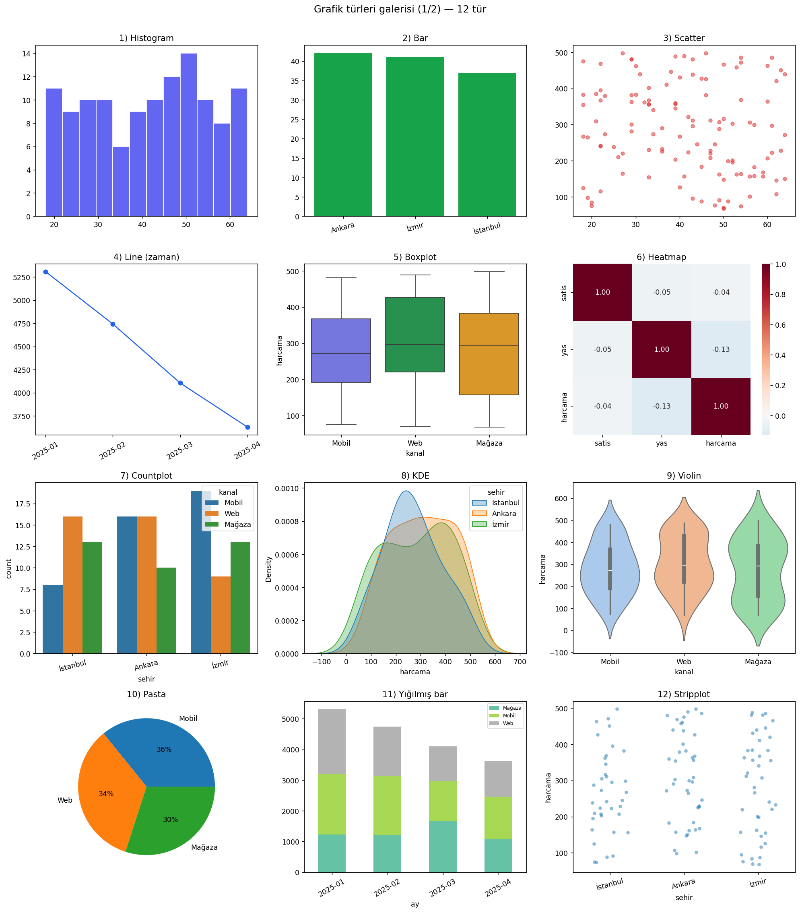
Ek türler (13–16)
- Area — zaman serisinde hacim / birikim hissi
- Hexbin — binlerce noktada yoğunluk hücreleri
- Yatay bar — uzun kategori etiketleri için
- Hist+KDE — yoğunluk (density) ölçeğinde sütun + pürüzsüz eğri birlikte
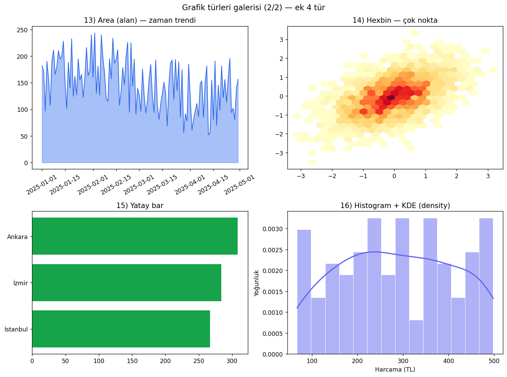
🖼️ Bölüm 2c: Grafikleri Okumayı Öğrenmek
Yukarıdaki görselleri şu sırayla inceleyin: önce tek başına ne gösteriyor, sonra yanlış yorum riski nedir?
| Şekil | Ne okuyorsunuz? | Yanlış yorum örneği |
|---|---|---|
| 2a Histogram/KDE | En sık görülen değer aralığı; tek mi çift mi tepe var | "Tepe 28 yaş" ≠ "herkes 28 yaşında" |
| 2b Boxplot | Gruplar arası medyan farkı; aykırı noktalar | Kutu kısa = herkes aynı değerde değil; sadece orta %50 sıkışık |
| 2c Scatter | İki değişken birlikte mi hareket ediyor | "Birlikte artıyor" ≠ "biri diğerine neden oluyor" |
| 2d Bar vs Pasta | Kategori payları; bar'da uzunluk kıyası | Pasta dilimlerini "hangisi daha büyük" diye gözle kıyaslamak zor |
| 2e Galeri | Her grafik türünün tipik görünümü | Hepsini aynı veriye uygulamak — soruya göre seçim |
📈 Bölüm 3: Matplotlib — Temel Grafikler
Matplotlib Python'da grafik çizmenin temel katmanıdır. Pandas'ın .plot() metodu arka planda çoğu zaman Matplotlib kullanır. Seaborn ve Plotly de bir noktada Matplotlib'e (veya benzer bir render katmanına) dayanır.
import matplotlib.pyplot as plt- Figure + axes oluştur:
fig, ax = plt.subplots()(veya birden fazla alt grafik içinplt.subplots(1, 3)) - Çiz:
ax.hist(...),ax.scatter(...),ax.plot(...) - Başlık/etiket ekle, kaydet:
plt.tight_layout()→plt.savefig("grafik.png")→plt.show()
Aşağıdaki kod EDA bölümündeki df üzerinde çalışır. Her satırın ne yaptığı yorumlu.
import matplotlib.pyplot as plt
# EDA'daki df hazır olsun; eksikleri medyan ile dolduralım
df_plot = df.copy()
df_plot["aylik_harcama"] = df_plot["aylik_harcama"].fillna(df_plot["aylik_harcama"].median())
# fig = tüm şekil, axes = alt grafik listesi (burada 1 satır × 3 sütun)
fig, axes = plt.subplots(1, 3, figsize=(14, 4))
# ── Grafik 1: Histogram ──
# bins = kaç kutuya böleceğiz. Tek sayısal kolon (yas) dağılımı.
axes[0].hist(df_plot["yas"], bins=15, color="#6366f1", edgecolor="white")
axes[0].set_title("Yaş dağılımı")
axes[0].set_xlabel("Yaş")
axes[0].set_ylabel("Frekans")
# ── Grafik 2: Scatter ──
# İki sayısal kolon; c= renk kodu (churn 0/1). alpha = şeffaflık (üst üste binen noktalar)
axes[1].scatter(df_plot["aylik_harcama"], df_plot["destek_cagri"],
alpha=0.5, c=df_plot["churn"], cmap="coolwarm")
axes[1].set_title("Harcama vs destek çağrısı (renk = churn)")
axes[1].set_xlabel("Aylık harcama")
axes[1].set_ylabel("Destek çağrısı")
# ── Grafik 3: Line ──
# groupby ile şehir ortalaması; line kategoriler arası trend için ideal DEĞİL ama
# karşılaştırma için kullanılabilir — bar da olurdu.
sehir_avg = df_plot.groupby("sehir")["aylik_harcama"].mean().sort_values()
axes[2].plot(sehir_avg.index, sehir_avg.values, marker="o", color="#16a34a")
axes[2].set_title("Şehir bazında ort. harcama")
axes[2].tick_params(axis="x", rotation=30)
plt.tight_layout() # Alt grafikler üst üste binmesin
plt.savefig("eda_matplotlib.png", dpi=120)
plt.show()🎨 Bölüm 4: Seaborn — İstatistiksel Grafikler
Seaborn, Matplotlib üzerine kurulu istatistik odaklı bir kütüphanedir. Tek satırla countplot, boxplot, heatmap, violin çizebilirsiniz; varsayılan tema genelde daha şıktır.
import seaborn as sns+import matplotlib.pyplot as plt(Seaborn çizimi Matplotlib'e gider)- Veriyi
data=dfile verin; kolon adlarınıx=,y=,hue=ile belirtin sns.set_theme(style="whitegrid")— tutarlı görünüm- Çoğu fonksiyon
ax=axes[i]alır; subplot ile birleştirmek kolay
import seaborn as sns
import matplotlib.pyplot as plt
sns.set_theme(style="whitegrid")
df_plot["churn_etiket"] = df_plot["churn"].map({0: "Kaldı", 1: "Ayrıldı"})
fig, axes = plt.subplots(1, 2, figsize=(12, 4))
# countplot = kategorik frekans. hue = ikinci kategori (gruplu bar)
sns.countplot(data=df_plot, x="sehir", hue="churn_etiket", ax=axes[0])
axes[0].set_title("Şehir × churn dağılımı")
axes[0].tick_params(axis="x", rotation=30)
# boxplot = medyan, çeyrekler, aykırı noktalar. Gruplar arası sayısal kıyas.
sns.boxplot(data=df_plot, x="churn_etiket", y="aylik_harcama", ax=axes[1])
axes[1].set_title("Churn vs harcama")
plt.tight_layout()
plt.savefig("seaborn_ornek.png", dpi=120)
plt.show()
# Korelasyon ısı haritası — sadece sayısal kolonlar
num = df_plot[["yas", "aylik_harcama", "destek_cagri", "churn"]]
plt.figure(figsize=(6, 4))
sns.heatmap(num.corr(), annot=True, cmap="RdBu_r", center=0, fmt=".2f")
plt.title("Korelasyon matrisi")
plt.tight_layout()
plt.show()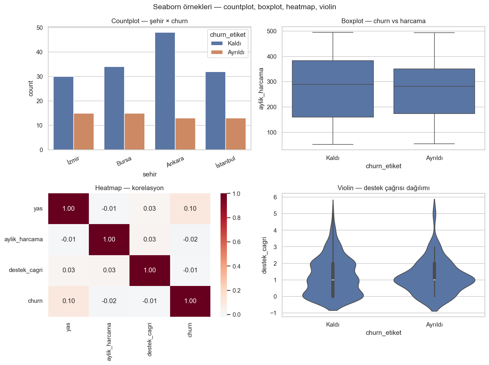
python scripts/generate_seaborn_ornek.py✨ Bölüm 5: Plotly — İnteraktif Grafikler
Plotly grafikleri tarayıcıda zoom, pan ve hover (fare üzerine gelince detay) ile etkileşimli yapar. Jupyter / Colab sunumları ve dashboard'lar için uygundur; statik Word/PDF raporunda Matplotlib tercih edilir.
- Plotly Express (
px): Hızlı grafik —px.scatter(df, x=..., y=..., color=...) - Plotly Graph Objects (
go): İnce ayar, çok katmanlı grafikler fig.show()— Colab/Jupyter'da interaktif açılır- Statik PNG için
fig.write_image()(kaleido paketi gerekir) veya ekran görüntüsü
import plotly.express as px
# hover_data = fare ile üzerine gelince gösterilecek ek kolonlar
fig = px.scatter(
df_plot, x="aylik_harcama", y="destek_cagri",
color=df_plot["churn"].map({0: "Kaldı", 1: "Ayrıldı"}),
hover_data=["sehir", "yas"],
title="İnteraktif scatter — fare ile nokta detayı",
labels={"aylik_harcama": "Aylık harcama (TL)", "destek_cagri": "Destek çağrısı"},
)
fig.update_traces(marker=dict(size=9, opacity=0.7))
fig.show() # Colab / Jupyter'da zoom + hover aktif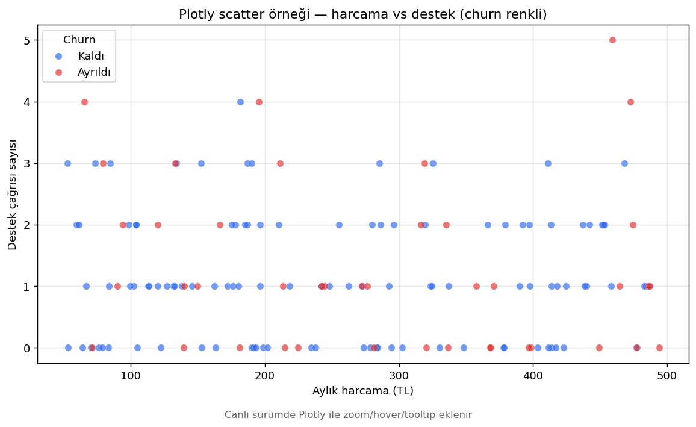
🤖 Makine Öğrenmesi Nedir? — Sıfırdan
Makine öğrenmesi (ML), bilgisayara "if harcama > 500 then churn" gibi elle yazılmış kurallar vermek yerine, geçmiş örneklerden örüntü çıkarmayı öğretmektir. Binlerce müşteri satırına bakılır; model hangi özellik kombinasyonlarının ayrılma veya yüksek harcamayla birlikte geldiğini sayısal olarak öğrenir. Yeni müşteri gelince aynı özellikleri okuyup tahmin üretir.
Size 100 elma gösterilir: "Bunlar olgun, bunlar ham." Siz renk, yumuşaklık, koku gibi ipuçlarından kendi kuralınızı çıkarırsınız. ML de aynı mantıkla çalışır — fark, kuralları insan cümlesi değil katsayılar ve eşikler olarak saklar.
Model, özellik, hedef — üç kelime
| Kavram | Ne demek? | Churn örneği |
|---|---|---|
| Özellik (feature, X) | Modelin baktığı girdi kolonları | yas, aylik_harcama, destek_cagri |
| Hedef (target, y) | Tahmin etmek istediğiniz kolon | churn (0=kaldı, 1=ayrıldı) veya aylik_harcama (TL) |
| Model | Özelliklerden hedefe giden öğrenilmiş fonksiyon | "Bu üç sayıya bak → %68 ayrılma olasılığı" veya "312 TL harcama" |
fit = model eğitim verisindeki (X, y) çiftlerine bakıp iç parametrelerini ayarlar. predict = eğitimde görmediği yeni X satırlarına tahmin yazar. sklearn'de neredeyse her algoritma aynı isimleri kullanır — bu tutarlılık başlangıç için büyük rahatlık.
İki büyük aile
Her satırda doğru cevap (etiket) vardır. Model "girdi → cevap" çiftlerinden öğrenir.
Regresyon: cevap sürekli sayı — aylık harcama, sıcaklık, fiyat.
Sınıflandırma: cevap sınıf — kaldı/ayrıldı, spam/değil, A/B/C segmenti.
Ne zaman? Geçmişte hem özellik hem doğru cevap kayıtlıysa.
Etiket yok. Model verideki doğal grupları veya yapıyı bulur.
Kümeleme (KMeans): "Benzer müşteriler hangi kümelerde?" — pazarlama segmentasyonu.
Boyut indirgeme (PCA): 50 kolonu 2–3 özet eksene sıkıştır — görselleştirme.
Ne zaman? "Kime kampanya atayacağımızı bilmiyoruz, önce grupları keşfedelim" dediğinizde.
Hangi problem → hangi yöntem?
| Soru | Problem tipi | Örnek algoritma |
|---|---|---|
| "Gelecek ay kaç TL harcar?" | Regresyon | LinearRegression, RandomForestRegressor |
| "Ayrılır mı, kalm mı?" | İkili sınıflandırma | LogisticRegression, DecisionTree |
| "Hangi ürün kategorisi?" | Çok sınıflı sınıflandırma | LogisticRegression (multinomial), RandomForest |
| "Müşterileri gruplara ayır" | Kümeleme | KMeans |
Eğitim adım adım — churn örneği
- Veri hazırla: Eksik satırları temizle veya doldur; kategorik kolonları sayıya çevir (one-hot encoding).
- X ve y ayır:
X = df[["yas","harcama","destek"]],y = df["churn"]. - Train / test böl: Örneğin %75 eğitim, %25 test. Test seti eğitimde hiç kullanılmaz — sadece "gerçekten öğrendi mi?" diye son kontrol.
- model.fit(X_train, y_train): Model parametrelerini öğrenir.
- model.predict(X_test): Görmediği müşterilere tahmin yazar.
- Metrik hesapla: Tahminler ne kadar isabetli? (Aşağıdaki formül bölümüne bakın.)
Overfitting (ezberleme) — en sık yapılan hata
Underfitting: Model çok basit — hem eğitimde hem testte kötü. "Herkes kaldı der" gibi.
Overfitting: Model eğitim setini ezberler — eğitim metrikleri mükemmel, test metrikleri düşer. Sınavda sadece çözdüğü soruları bilen öğrenci gibi: ezber listesi işe yaramaz.
- Çözüm: Daha fazla veri, daha basit model,
max_depthsınırı, cross-validation, train/test ayrımına sadık kalmak. - Kırmızı bayrak: %99+ accuracy + dengesiz sınıflar → muhtemelen veri sızıntısı veya ezber.
Eğitim vs çıkarım (inference)
Eğitim pahalıdır — tüm veri taranır, parametreler güncellenir. Çıkarım ucuzdur — tek satır için predict milisaniyeler sürer. Üretimde (canlı sistem) genelde önceden eğitilmiş model yüklenir; gelen müşteri kaydına anında skor verilir. Bölüm 3–4'teki Spark → Pandas → sklearn hattı tam olarak budur: büyük veriyi eğitim için küçült, modeli kaydet, sonra tek tek tahmin.
- Kötü veya eksik veri → kötü tahmin (garbage in, garbage out).
- Geçmişte görülmemiş durum (COVID, yeni ürün) → model şaşırır.
- Özellikler hedefi "hileyle" içeriyorsa (veri sızıntısı) metrikler yanıltır — örn.
ayrilma_tarihikolonunu churn tahmininde kullanmak. - %100 accuracy genelde ezberleme veya sızıntı işaretidir.
📐 Metrik Formülleri — Regresyon ve Sınıflandırma
Model "tahmin etti" — peki ne kadar iyi? Metrikler sayısal cevap verir. Her formülün altında sözel açıklama ve elle hesaplanmış mini örnek var; formülü ezberlemek yerine "ne ölçüyor?" sorusuna cevap arayın.
Regresyon metrikleri (hedef = sayı)
Diyelim ki model müşterilerin aylık harcamasını (TL) tahmin ediyor. Test setinde \(n\) müşteri var. Her müşteri için:
- \(y_i\) = gerçek harcama (TL)
- \(\hat{y}_i\) = modelin tahmini (TL)
- Hata = \(y_i - \hat{y}_i\) (pozitif = model düşük tahmin etti, negatif = yüksek tahmin etti)
Ne zaman bakılır? Ortalama sapma büyüklüğünü anlamak istediğinizde. Aykırı birkaç çok kötü tahmin MAE'yi aşırı şişirmez.
Ne zaman bakılır? "Büyük patlamalar var mı?" sorusu önemliyse. RMSE ≫ MAE ise birkaç çok kötü tahmin var demektir.
\(SS_{\mathrm{res}}\) = modelin kare hataları toplamı · \(SS_{\mathrm{tot}}\) = herkese ortalama desek ne kadar hata kalırdı?
\(R^2 = 1\) → mükemmel; \(R^2 = 0\) → ortalamayı söylemek kadar; negatif → ortalamadan bile kötü.
Test setinde 4 müşteri var. Gerçek ve tahmin harcamaları:
| Müşteri | Gerçek yi (TL) | Tahmin (TL) | Hata | |Hata| | Hata² |
|---|---|---|---|---|---|
| A | 100 | 110 | −10 | 10 | 100 |
| B | 200 | 180 | +20 | 20 | 400 |
| C | 300 | 290 | +10 | 10 | 100 |
| D | 400 | 320 | +80 | 80 | 6400 |
Sonuç: 30 TL · Yorum: Tahminler gerçek değerden ortalama 30 TL uzakta.
Sonuç: 41,8 TL · MAE (30) < RMSE (41,8) → D müşterisindeki +80 TL'lik büyük hata RMSE'yi MAE'den daha çok şişirmiş (kare alma etkisi).
Önce basit tahmine kıyas: "Herkese ortalama harcama desek" ne kadar hata kalır?
Sonuç: R² = 0,86 · Yorum: Model, "hep 250 TL de" demekten çok daha iyi — varyansın yaklaşık %86'sını açıklıyor (bu mini örnekte).
import numpy as np
from sklearn.metrics import mean_absolute_error, mean_squared_error, r2_score
y_true = np.array([100, 200, 300, 400])
y_pred = np.array([110, 180, 290, 320])
print("MAE :", mean_absolute_error(y_true, y_pred), "TL")
print("RMSE:", np.sqrt(mean_squared_error(y_true, y_pred)), "TL")
print("R² :", round(r2_score(y_true, y_pred), 3))Sınıflandırma metrikleri (hedef = sınıf)
Churn örneğinde iki sınıf: Kaldı (0) ve Ayrıldı (1). Model her müşteriye bir tahmin yazar. Sonuçları dört kutuya ayırırız — confusion matrix (karmaşıklık matrisi):
| Tahmin: Kaldı | Tahmin: Ayrıldı | |
|---|---|---|
| Gerçek: Kaldı | TN — doğru, kaldı dedik kaldı | FP — yanlış alarm, ayrılır dedik ama kaldı |
| Gerçek: Ayrıldı | FN — kaçırdık, kaldı dedik ama ayrıldı | TP — doğru, ayrılır dedik ayrıldı |
70 müşteri kaldı, 30 müşteri ayrıldı. Model 20 kişiye "ayrılır" dedi:
| Tahmin: Kaldı | Tahmin: Ayrıldı | Toplam (gerçek) | |
|---|---|---|---|
| Gerçek: Kaldı | TN = 55 | FP = 5 | 70 |
| Gerçek: Ayrıldı | FN = 15 | TP = 15 | 30 |
| Toplam (tahmin) | 70 | 20 | 100 |
100 tahminin 70'i doğru.
"Ayrılır" dediğimiz 20 kişinin 15'i (%75) gerçekten ayrıldı.
Gerçekten ayrılan 30 müşterinin yarısını yakaladık, yarısını kaçırdık.
İş kararı: Kaçırmak pahalıysa recall'u artırın; yanlış alarm pahalıysa precision'a bakın.
from sklearn.metrics import accuracy_score, precision_score, recall_score, f1_score
# Gerçek: 70 kaldı (0), 30 ayrıldı (1)
y_true = [0]*55 + [1]*15 + [0]*5 + [1]*15 # 70 sıfır, 30 bir
# Tahmin: 20 kişiye ayrılır dedik (15 doğru + 5 yanlış alarm)
y_pred = [0]*55 + [1]*15 + [1]*5 + [0]*15
print("Accuracy :", round(accuracy_score(y_true, y_pred), 2))
print("Precision:", round(precision_score(y_true, y_pred), 2))
print("Recall :", round(recall_score(y_true, y_pred), 2))
print("F1 :", round(f1_score(y_true, y_pred), 2))🧪 Bölüm 6: scikit-learn ile Uygulama
Bölüm 3'te "Spark büyük veriyi filtreler → küçük Pandas tablosu → sklearn" desenini gördünüz. Bölüm 4'te anonim veriyle pipeline örneği vardı. Burada aynı iskeleti adım adım, yorumlu kodla kuruyoruz.
scikit-learn (sklearn) Python'da ML için standart başlangıç kütüphanesidir. Derin öğrenme yapmaz; tablo verisi (müşteri, satış, sensör) için idealdir. Tüm modellerde aynı API: fit (öğren), predict (tahmin).
6a. Doğrusal regresyon — sayı tahmini
Ne yapar? Özelliklerle hedef arasında düz bir formül arar. Matematik bilmek zorunda değilsiniz; mantık şu:
tahmin = sabit + (a × yaş) + (b × destek_çağrısı)
a ve b katsayıları eğitim sırasında veriden öğrenilir. "Yaş 1 artınca harcama ortalama a kadar artıyor" gibi yorumlanabilir — bu yüzden yorumlanabilir bir modeldir.
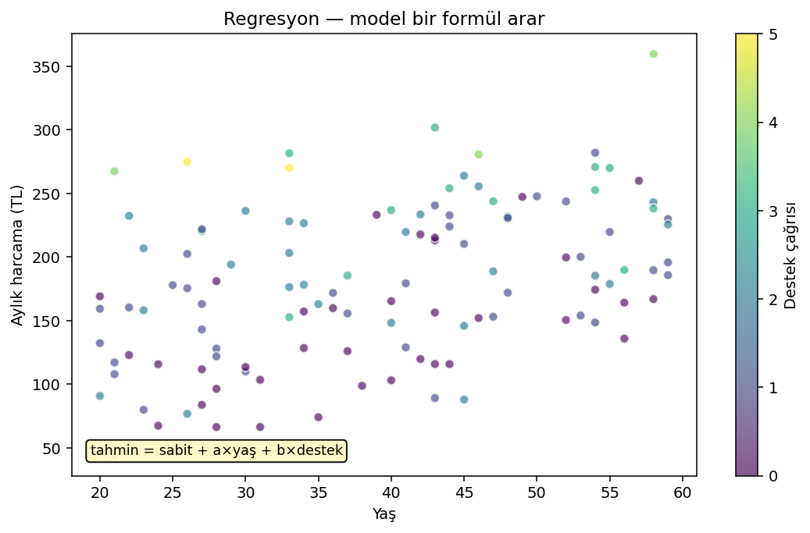
from sklearn.model_selection import train_test_split
from sklearn.linear_model import LinearRegression
from sklearn.metrics import mean_absolute_error, r2_score
ml = df_plot.dropna(subset=["aylik_harcama"]).copy()
X = ml[["yas", "destek_cagri"]] # girdiler — model bunlara bakar
y = ml["aylik_harcama"] # hedef — tahmin edilecek SAYI (regresyon)
# %75 eğitim, %25 test — model test kısmını eğitimde GÖRMEDİ
X_train, X_test, y_train, y_test = train_test_split(X, y, test_size=0.25, random_state=42)
model_reg = LinearRegression()
model_reg.fit(X_train, y_train) # fit = "bu X-y çiftlerinden öğren"
pred = model_reg.predict(X_test) # predict = "görmediğin X'lere tahmin yap"
print("Katsayılar (yaş, destek):", model_reg.coef_)
print("Sabit terim:", round(model_reg.intercept_, 2))
print("MAE (TL):", round(mean_absolute_error(y_test, pred), 2))
print("R²:", round(r2_score(y_test, pred), 3))Formüller için yukarıdaki Metrik Formülleri bölümüne bakın. Kısa özet:
- MAE: Ortalama mutlak sapma (TL). MAE=45 → tahminler gerçekten ortalama 45 TL uzakta.
- R²: 0.3 = varyansın yaklaşık %30'unu açıklıyor; 1.0 mükemmel (nadir).
6b. Lojistik regresyon — sınıf tahmini (churn)
Ne yapar? İsimde "regresyon" geçse de bu bir sınıflandırma algoritmasıdır. Her sınıf için olasılık hesaplar: "Bu müşteri %73 ihtimalle ayrılır" → eşik 0.5 üzerindeyse sınıf = 1 (ayrıldı).
Ne zaman? Hedef iki veya birkaç kategoriden biri: spam/değil, hastalık var/yok, churn evet/hayır.
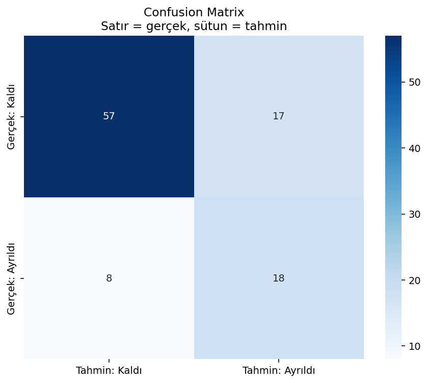
from sklearn.linear_model import LogisticRegression
from sklearn.metrics import accuracy_score, classification_report, confusion_matrix
from sklearn.model_selection import train_test_split
X = ml[["yas", "aylik_harcama", "destek_cagri"]]
y = ml["churn"] # 0 veya 1 — SINIF, sayı değil (anlam olarak)
X_train, X_test, y_train, y_test = train_test_split(
X, y, test_size=0.25, random_state=42, stratify=y
)
# stratify=y → train ve test'te ayrılan oranı aynı tut (dengesiz veri)
model_clf = LogisticRegression(max_iter=1000)
model_clf.fit(X_train, y_train)
pred_clf = model_clf.predict(X_test)
print("Accuracy:", round(accuracy_score(y_test, pred_clf), 3))
print(classification_report(y_test, pred_clf, target_names=["Kaldı", "Ayrıldı"]))
print(confusion_matrix(y_test, pred_clf))Accuracy formülü ve TP/TN/FP/FN kutuları için Metrik Formülleri bölümüne bakın.
Dengesiz veride accuracy yanıltır: %94'ü "kaldı" olan veride herkese "kaldı" derseniz %94 accuracy alırsınız — ama hiç ayrılanı yakalayamazsınız.
- Precision: "Ayrıldı dediklerimizin kaçı gerçekten ayrıldı?" — gereksiz alarm maliyeti yüksekse önemli.
- Recall: "Gerçekten ayrılanların kaçını yakaladık?" — kaçırmak pahalıysa önemli.
- F1: İkisinin dengesi — tek skor istiyorsanız.
🗺️ Bölüm 6b: Diğer Algoritmalar — Detaylı
sklearn yalnızca doğrusal modellerle sınırlı değil. Aşağıda her algoritmayı ne zaman, nasıl çalışır, ne zaman kullanma açısından ele alıyoruz.
6c. KMeans kümeleme — etiket olmadan gruplama
Fikir: Haritada yakın duran noktalar aynı gruba. Algoritma K adet "merkez" seçer; her noktayı en yakın merkeze atar; merkezleri günceller — ta ki gruplar oturana kadar.
Ne zaman? Müşteri segmentasyonu, "hangi ürünler birlikte alınır" grupları — hedef kolon yokken.
Dikkat: K'yı siz seçersiniz (3 segment mi, 5 mi?). Özellikleri aynı ölçeğe getirmek gerekir (StandardScaler) — yoksa TL kolonu diğerlerini bastırır.
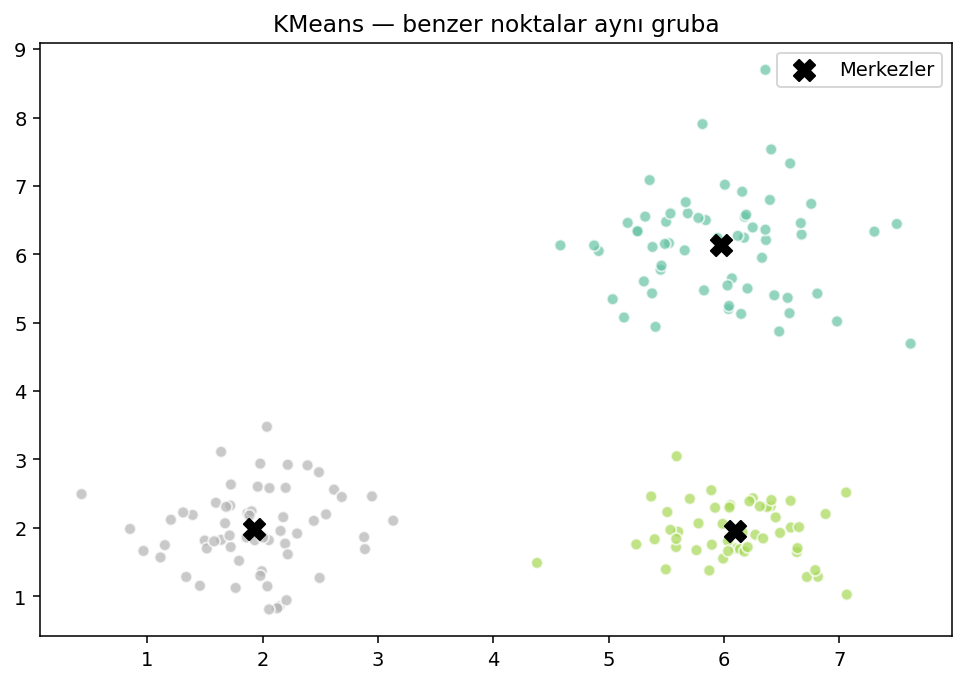
from sklearn.cluster import KMeans
from sklearn.preprocessing import StandardScaler
X_clust = ml[["aylik_harcama", "destek_cagri", "yas"]]
scaler = StandardScaler()
X_scaled = scaler.fit_transform(X_clust) # her kolon ortalama 0, std 1
km = KMeans(n_clusters=3, random_state=42, n_init=10)
ml["segment"] = km.fit_predict(X_scaled) # fit_predict = öğren + her satıra grup no
print(ml.groupby("segment")[["aylik_harcama", "destek_cagri"]].mean())6d. Karar ağacı — soru sorarak böl
Fikir: Akış şeması gibi. "Harcama > 250 mi?" → Evet/Hayır → "Destek ≥ 3 mü?" … en altta yaprak = tahmin (Kaldı/Ayrıldı).
Artı: İnsan okuyabilir — "Model neden ayrıldı dedi?" sorusuna cevap verir.
Eksi: Derin ağaç ezberler (overfitting). max_depth=4 gibi sınırlar konur.
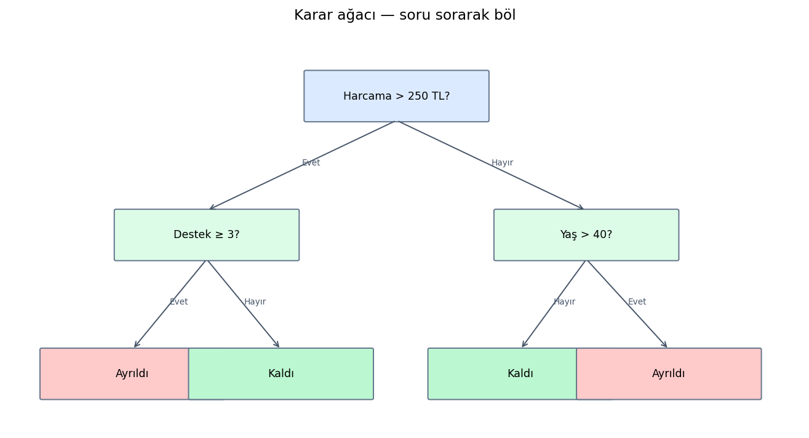
from sklearn.tree import DecisionTreeClassifier
from sklearn.model_selection import train_test_split
from sklearn.metrics import accuracy_score
X = ml[["yas", "aylik_harcama", "destek_cagri"]]
y = ml["churn"]
X_train, X_test, y_train, y_test = train_test_split(X, y, test_size=0.25, random_state=42, stratify=y)
tree = DecisionTreeClassifier(max_depth=4, random_state=42)
tree.fit(X_train, y_train)
print("Accuracy:", accuracy_score(y_test, tree.predict(X_test)))6e. Rastgele orman — çok ağacın oylaması
Fikir: Yüzlerce karar ağacı, her biri verinin rastgele bir alt kümesiyle eğitilir. Tahmin = çoğunluk oyu (sınıflandırma) veya ortalama (regresyon).
Ne zaman? Tabular veride genelde tek ağaçtan daha iyi skor; yorumlanması daha zor.
Parametre: n_estimators=100 = 100 ağaç. Daha fazla ağaç = genelde daha stabil, ama daha yavaş.
from sklearn.ensemble import RandomForestClassifier
from sklearn.metrics import accuracy_score
rf = RandomForestClassifier(n_estimators=100, max_depth=6, random_state=42)
rf.fit(X_train, y_train)
print("Random Forest accuracy:", accuracy_score(y_test, rf.predict(X_test)))6f. Cross-validation — tek bölünme yetmez
Tek train/test şans eseri kolay veya zor gelebilir. 5-fold CV: Veriyi 5 parçaya böl; her seferinde 4 parça eğitim, 1 parça test; 5 skorun ortalamasını al.
from sklearn.model_selection import cross_val_score
from sklearn.linear_model import LogisticRegression
model = LogisticRegression(max_iter=1000)
scores = cross_val_score(model, X, y, cv=5, scoring="accuracy")
print(f"Ortalama accuracy: {scores.mean():.3f} (±{scores.std():.3f})")
print("Her fold:", scores.round(3))6g. Pipeline — ön işleme + model tek pakette
Bölüm 4'te gördüğünüz gibi: eksik doldurma, kategorik encode, ölçekleme ve model tek pipeline'da birleşir. Test setine sızıntı olmaz — fit sadece train'de yapılır.
from sklearn.pipeline import Pipeline
from sklearn.impute import SimpleImputer
from sklearn.preprocessing import StandardScaler
from sklearn.linear_model import LogisticRegression
from sklearn.metrics import accuracy_score
pipe = Pipeline([
("doldur", SimpleImputer(strategy="median")),
("olcek", StandardScaler()),
("model", LogisticRegression(max_iter=1000)),
])
pipe.fit(X_train, y_train)
print("Pipeline accuracy:", accuracy_score(y_test, pipe.predict(X_test)))| Algoritma | Problem | Güçlü yanı | Zayıf yanı |
|---|---|---|---|
| Doğrusal regresyon | Sayı tahmini | Hızlı, yorumlanabilir | Doğrusal olmayan ilişkileri kaçırır |
| Lojistik regresyon | 0/1 sınıf | Olasılık çıktısı, hızlı | Karmaşık sınırlarda zayıf |
| KMeans | Grup bulma | Basit segmentasyon | K ve ölçek seçimi sizde |
| Karar ağacı | Sınıf / sayı | Kuralları okuyabilirsiniz | Derinleşince ezberler |
| Rastgele orman | Sınıf / sayı | Genelde güçlü tabular skor | Kara kutu, yavaş |
XGBoost / LightGBM: Tabular yarışmalarda sık kazanan — sklearn API'sine benzer. PyTorch / TensorFlow: görüntü, ses, metin. Spark MLlib: veri hâlâ cluster'dayken model. Bu ders sklearn ile temeli atar; ileride ihtiyaca göre dalarsınız.
🔗 Bölüm 7: Uçtan Uca Mini Akış
Özet pipeline — gerçek projelerde tekrarlanan analitik hattı:
read_csv / Parquet"] --> B["🧹 Temizle
eksik, aykırı"] B --> C["🔍 EDA
describe, groupby"] C --> D["📊 Grafik
matplotlib / seaborn"] D --> E["🤖 Model
sklearn"] E --> F["📄 Rapor
grafik + yorum"]
# Tek script iskeleti — EDA → grafik → (isteğe bağlı) model
import pandas as pd
import matplotlib.pyplot as plt
import seaborn as sns
from sklearn.model_selection import train_test_split
from sklearn.linear_model import LogisticRegression
from sklearn.metrics import accuracy_score
# 1) Yükle — Bölüm 5'teki Parquet çıktısı da olabilir
df = pd.read_csv("veri.csv")
# 2) EDA
print(df.shape, df.describe())
print(df.isna().sum())
# 3) Grafik — soruya uygun türü Bölüm 2 tablosundan seç
sns.histplot(data=df, x="hedef_kolon", kde=True)
plt.savefig("grafik1.png")
plt.close()
# 4) Model (örnek — hedef sınıfsa sınıflandırma, sayıysa regresyon)
# X = df[["ozellik1", "ozellik2"]]; y = df["hedef"]
# X_train, X_test, y_train, y_test = train_test_split(X, y, test_size=0.25)
# ...
# 5) Yorum — notebook'ta markdown: "Grafik X'i gösteriyor çünkü ..."📚 Kaynaklar ve Kütüphaneler
🛠️ Bu bölümde geçen kütüphaneler
📝 Özet
- Kelime haznesi: Sürekli/kategorik veri, aykırı değer, eksik değer, medyan, korelasyon — günlük dille.
- EDA: Modele geçmeden veriyi tanı — şekil, tip, eksik, dağılım, groupby, aykırı.
- Grafik: Her türün ne işe yaradığı, ne zaman yanıltır; histogram vs KDE vs bar; 8+ örnek görsel.
- ML temeli: Denetimli/denetimsiz; regresyon vs sınıflandırma; train/test; ezberleme tuzağı.
- Algoritmalar: Doğrusal/lojistik regresyon, KMeans, karar ağacı, rastgele orman, CV, pipeline — teori + kod.
- Bir veri setinde %40 eksik değer varsa satır silmek mi, doldurmak mı? Ne zaman hangisi?
- Churn tahmininde %95 accuracy görürsünüz — ama verinin %94'ü "kalmış". Bu iyi bir model mi?
- Histogram ile bar chart arasındaki fark nedir? KDE ne zaman histograma tercih edilir?
- Korelasyon gördünüz diye "X, Y'ye neden oluyor" diyebilir misiniz? Neden hayır?
- Regresyon ile sınıflandırma arasındaki farkı kendi cümlelerinizle açıklayın.
- Karar ağacı mı rastgele orman mı — yorumlanabilirlik vs skor trade-off'unu tartışın.
python scripts/generate_grafik_galeri.py · python scripts/generate_grafik_ornekleri.py · python scripts/generate_seaborn_ornek.py
Çıktılar: grafik_galeri.png, grafik_galeri_ek.png, grafik_histogram_kde.png, grafik_boxplot_aciklama.png, …
Bu bölümdeki kodları Colab'da çalıştırın. Ek alıştırmalar için Uygulamalar sayfasına bakın.